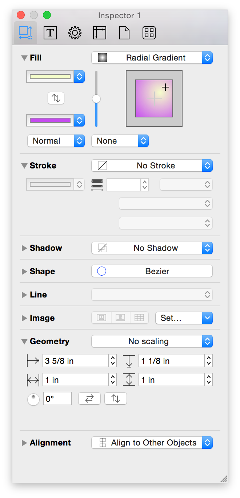

Working With the Inspectors❯
Working With the Inspectors❯
Along the right side of the window, you’ll find the Inspectors sidebar. You use the Inspectors to change the style attributes for the objects on the Canvas, or set the properties of the Canvas itself. If you don’t see them, click the Info button in the toolbar or choose Inspectors ▸ Hide/Show Inspectors from the menu bar.
The Inspectors sidebar contains five inspectors—Object, Type, Properties (Pro), Canvas, Document, and Stencils. Each inspector contains two or more panes, for such things as adding a fill to an object or setting a background image for the illustration you’re working on.
Inspectors are grouped by the type of content they govern. You can browse the various Inspector categories by clicking the icons along the top of the sidebar. Within each Inspector, you’ll find multiple, collapsable inspectors for changing the properties of an object.
To open an Inspector, hover over the title with the mouse, and then click on the disclosure triangle to open and use the inspector. To open one particular inspector (for example the Fill inspector) and close any other open inspectors, Option-click on the disclosure triangle. To open or close all of the inspectors, Shift-Command-click on one of the disclosure triangles.

By default, OmniGraffle’s inspectors reside in a sidebar just to the right of the Canvas. However, with OmniGraffle v6.1 (released Fall 2014), you can now open the inspectors as a floating window, or as a bunch of individual floating palettes.
To help facilitate these changes to using the inspectors, we’ve added a new menu: Inspectors. Pretty easy to remember, huh? You choose how you want to use and display the Inspectors from this menu.

You can quickly get to each individual Inspector using a keyboard shortcut or, if you must, by selecting its appropriate menu option:
The top section of the Inspectors menu indicates the currently selected inspector (the one with the checkmark next to it), and the inspector type. The previous image shows that the inspectors are available in the Sidebar and that the Object inspector has been selected. The bottom section of the Inspectors menu separates the different inspector states by Workspaces.
Workspaces offer a way to add shortcuts to the way you’ve set up a particular inspector. For example, let’s say that you are using the Floating Inspector Window, and that you often just need access to the Fill and Stroke panes. To create this workspace shortcut, follow these steps:
If you go back to the Inspectors menu, you’ll notice that the Fill-Stroke workspace has been added to the Workspaces section. Now, whenever you need to just tweak an object’s fill or stroke, you can press F5 to gain quick access to these two inspector panes.
To open the floating inspector window, choose Inspectors ▸ Floating, or press F3. The floating inspector window looks just like the inspector sidebar, except, well, it is no longer a sidebar.
When you switch to the floating inspector window, a new set of inspector keyboard shortcuts come into effect:
To open the inspector palettes, choose Inspectors ▸ Palettes, or press F4. You’ll see a stack of windows appear over OmniGraffle’s main window. You’ll need to move them aside individually, but once you’ve got them set up—especially if you have them all on a second display—you’ll be amazed at how addicted you can get to having the inspectors in palette form.
When the inspector palettes are open, a new set of inspector keyboard shortcuts come into effect:
Having the Inspectors available as floating windows or as individual floating palettes was a huge request from designers who use OmniGraffle to create and edit illustrations or prototype website or app designs. This allows designers to take advantage of big external displays for OmniGraffle’s main window while offloading the inspectors to a secondary display (such as a laptop screen or another large display). This is especially helpful when you are using OmniGraffle in full-screen mode (View ▸ Enter/Exit Full Screen, or Control-Command-F).
If you find that you’re using a particular Inspector quite a bit—such as the Fill, Stroke, and Shape object inspectors—and you can lock them in the open position. To lock these inspectors in place, double-click the Object inspector button in the toolbar above the inspectors. The button receives a green lock icon.
If you Option-click another inspector’s disclosure triangle, such as the Geometry object inspector, that inspector opens but the Fill, Stroke, and Shape inspectors remain open as well instead of closing. Likewise, if you Shift-Command-click an inspector’s disclosure triangle—which would normally open or close all of the inspector panes—the panes you’ve locked open will remain open, despite what happens with the other inspectors.
To unlock the inspector, just double-click the button again or switch to another Inspector; for example, from a locked Object inspector to the Type inspector.
In all of the inspectors, you can click in a text field that contains a number, and then press the up or down arrow keys to increment or decrement the number.
When it comes to rotating objects, you have a couple options. First select the object and then go to the Geometry object inspector. Click and spin the rotation dial and watch the object revolve around its center point. After clicking the rotation dial, keep the mouse button held down while moving the pointer away from the control to gain more rotational precision.
You’ll be happy to know that we’ve brought OmniGraffle 2 for iPad’s Multi-Touch gestures to the Mac. Yes, that’s right, you can use a two-fingered spin gesture to rotate an object on the canvas if you have a touch-enabled trackpad for your Mac.
Select and touch an object with two fingers, and then rotate the fingers (or pivot one around the other) to rotate the object. While rotating the object, you’ll notice that a blue angle indicator appears within the object, and a tiny popover appears showing you the degree of the angle.
Any color well can have its color dragged to an object on the canvas or to another color well. When you drag to an object, you can drop the color on the object’s stroke, fill, or text.
In places where you can enter measurements, such as in the Geometry inspector, values are shown in the current ruler units, or, if there is no unit scale, in the Units inspector. You can, however, enter values in any unit type that is available in the ruler, such as miles or kilometers. As soon as you finish entering the value, OmniGraffle converts it to the correct units automatically.
You can also perform simple arithmetic and mix units. Add (+), subtract (−), multiply (*), or divide (/) numbers right in the input fields.
Use the Object inspectors to view and change details about the objects on the Canvas.
Use the Fill inspector to choose a color or gradient to fill the inside of the selected shapes. Depending on the type of fill you’ve selected, the Fill inspector adapts to provide the controls you need to adjust the fill’s settings.
The Fill inspector has the following controls:
If you have OmniGraffle Pro, the Fill inspector has two additional popup menus along the bottom: Fill Blend Type and Distortion Effect.

Some additional notes about the Fill inspector:
You can also edit the fill color of a canvas itself using the Canvas Fill inspector.
(Pro) OmniGraffle Pro offers an extra section in the Color panel for creating pattern fills.
Use the Stroke inspector to change the appearance of the selected connection lines or of the line drawn around the edge of the selected shapes.
Use the Shadow inspector to drop a shadow behind the selected objects.
With a shape object selected, use this inspector to transform it in various ways.
Use this inspector to configure the properties of a the lines used to connect objects.
Use the pop-up menu at the top to set how the line travels from its source to its destination:
In the middle of the Line inspector, you’ll find two pop-up menus on the right and left—used to set the appearance of the tail and head of the line. Click the reverse button to swap the line’s source and destination points.
Use the fields below the tail and head menus to change the line ending sizes. If you’ve set the line type to Orthogonal, you can use the curve radius field in the middle to add some curvature to the line’s corners.
The Line Hops menu determines what the line should do when it crosses other lines; choose one of the hop types to make the line jump over or under other lines, or choose Ignore this line to prevent other lines from hopping over or under it. The hops depend on the ordering of the lines involved; you can reorder objects with the Bring and Send commands in the Arrange menu.
You can use this inspector to position an image inside a shape. (Note that instead of creating an object and then adding an image, you could also simply drag an image file from another application straight onto the canvas.)
This inspector deals with an object’s position and orientation.
To rotate the object, enter a degree value in the rotation field, or drag the circular control.
The top two fields contain the X and Y (horizontal and vertical) coordinates for the selected objects; the value represents the distance between the canvas’s origin and the upper-left corner of the object (which might not be obvious if the object is rotated or flipped). If you have multiple objects selected, two hyphens (- -) appear in the fields that have different values. Enter a new X or Y value to move an object on the canvas.
The next two fields contain the Width and Height values for the selected objects. If you have multiple objects selected, two hyphens (- -) appear in the fields that have different values. Enter a new width or height value to resize an object on the canvas.
Click the flip buttons to reverse the object horizontally or vertically.
Next to the flip buttons is a pop-up menu with the following options:
No scaling — by default, the objects you draw on the canvas are not scaled to any size or proportion.
Maintain Aspect Ratio — the objects you draw or resize are scaled proportionally. In addition, there are three additional aspect-related options:
If you have selected a line label, two additional controls become active:
Use the pop-up menu to set how the label’s text appears in relation to the line. Options include: Horizontal, Vertical, Parallel, Perpendicular, Independent, and Follows Path. Use the slider next to the pop-up menu to change the label’s position in relation to the line.
Use this inspector to line up and space out objects uniformly.
Manage the typography of selected objects.
Use this inspector to modify the font properties of the selected objects, including style, size, and color.
Use this inspector to control the positioning and appearance of the selected shape’s text.
This inspector contains the Text Offset and Text Rotation controls.
By default, the Use default offsets option is turned on. If you uncheck this option, you can adjust the text’s position using the four input fields:
Use the text’s rotation value to determine how the text appears when you rotate the object. By default, Relative rotation is turned on, which means that the text within an object will maintain its relative position when an object is rotated. Turn this off to set the text’s rotation independent of its bounding object. You can either enter a rotation value in the field or drag the circular control to rotate the text.
Use the Properties inspectors, available only in OmniGraffle Pro, to manage the advanced properties of selected objects.
Use this inspector to control how objects connect to one another.
Turn off Allow connections from lines to make it impossible for connection lines to use the selected objects as sources or destinations.
If you have a group or a table selected, you can choose whether connection lines should be allowed to connect to objects in the group or only to the group as a whole.
The pop-up menu contains a bunch of magnet presets you can choose for the selected shape object. Magnets are points on a shape object that attract connection lines. You can choose to have no magnets, magnets placed according to cardinal directions (North, South, East, and West), magnets on each vertex (corner), or a certain number of magnets on each side of the shape.
If you select some number of magnets per side, then hold Shift while opening the pop-up menu and selecting another number, the two numbers are added together; you can get up to 10 magnets per side in this way.
Of course, you can always use the Magnet tool to customize a shape’s magnet arrangement.
If you have a line selected, the Lines checkboxes become available. Deselect the Allow connections to other objects checkbox to make it impossible for the line to have an object as its source or destination. Deselect the Allow shapes to become labels checkbox to make it impossible to drag a shape onto the line and make it a line label; existing labels stay attached.
These assignments don’t change the directions of connection lines, so you can always select all of your objects and choose Default Object Ranking to return them to normal.
The Note inspector contains a field for entering text to associate with the selected object, and a table of custom data.
The note can be formatted as Rich Text, which means you can use all of the different font styles and colors that you can use elsewhere in OmniGraffle. When you put the pointer over an object with a note, the note’s text appears in a help tag floating over the object.
You can use the custom data table to keep your own information about the object. Custom data is stored as key/value pairs: the Key is like a label for what type of information you are storing, and the Value is the information itself.
For example, imagine you have a diagram of a computer network, and you want to assign a model number to each component. Click the placeholder row or the plus button to create a new key/value pair. In the Key column, you would type Part Number, and in the Value field, you would type, say, A1181. This data doesn’t have any effect on the way OmniGraffle works; it’s just a way for you to store arbitrary data about objects in your diagram. To delete a row of data, click the ‘x’ button on the right side of the row.
Notes can be found by OS X’s Spotlight search feature, in case you need to find your OmniGraffle diagrams that contain certain words.
The Action inspector determines what should happen when someone clicks the selected object with the Action Browse Tool in the toolbar. The default action is Does Nothing. You can click the object all you want, and nothing happens.
If you choose Opens a URL or Opens a File, you get a text field in which you can enter a URL or file path, along with two buttons: Choose File and Open. Click Choose File to browse your Mac’s hard drive for a file. Note that file paths are relative: they start from the folder containing the document you’re working on, not from the root of your hard drive. Click Open button to try opening the file or URL that you’ve specified. When the object is clicked, the file or URL is opened in the appropriate app.
If you choose Runs a Script, you get a text field for entering an AppleScript. The script that you enter is run such that self refers to the clicked object. Click Check Syntax to make sure that the AppleScript is correct, and then click Run Script to try it out. In Presentation Mode (Option-Command-P), the script runs when an actionable object is clicked.
If you choose Jumps Elsewhere, you get another pop-up menu for choosing where in the current document to jump. You can jump to a specific canvas, the next or previous canvas, or a specific point or object on any canvas. Some of these options offer a tiny canvas preview, in which you can click or drag to indicate which object to highlight, which point to center on, or where to zoom.
If you choose Shows or Hides Layers, you can indicate whether to show, hide, or toggle the visibility of any layer of the current canvas.
Manage the appearance and properties of the current or selected canvases.
Use this inspector to change the size of the canvas, how the canvas fits onto printed pages, or what kind of measurement units to use.
Select a canvas by clicking its preview in the sidebar to edit its background fill properties. As with the Object Fill inspector you can choose from nine fill styles and edit various parameters of each.
You can also add an image to a canvas. Just click the canvas in the sidebar and then use the Background Image inspector to place an image similarly to the Object Image inspector.
Use the controls to the left of the Mask button to Manually Size, Stretch, or Tile the image you’ve placed. Use the grid of four fields to position the image from left, from top, sized horizontally, or sized vertically. Use the slider at the bottom of the inspector to change the image’s opacity.
Use the Units inspector to determine the unit of measure to use for the canvas and its rulers, as well as to set the scale and origin points.
The Units pop-up menu is where you set the type of measurement units you’d like to use for the current canvas. All of OmniGraffle’s supported units are listed, with their standard abbreviations.
The actual size of your diagram does not change when you change the units; it is merely measured differently. The ruler and the inspectors display measurements in whichever unit you select here.
Units marked with an asterisk (*) can be used as canvas units. This means that when you set up a Unit Scale (see the next section), only these units can be used on the left-side “actual size” part of the equation. Any kind of units can be used on the right-side “theoretical size” part of the scale equation.
The Unit Scale pop-up menu can be used to interpret simple expressions of scale. By default, the scale is based on the item you choose in the Units pop-up. For example, if you set Units to feet (ft), the Scale pop-up reads 12 in = 1 ft.
If you choose Custom from the Scale pop-up, you can change the scale to suit the project you’re currently working on. For example, if you enter 1 cm = 1 m, 1 cm on the ruler now becomes 1 meter, objects on the canvas that were 2 cm wide are now 2 meters wide, and so on. The Units setting changes to match the second value in the equation.
You can also enter a ratio. For example, if you set a Custom Scale to 1:12, the ruler units stay the same, but objects on the canvas now claim to be 12 times larger than they were before you changed the scale.
If you already have a scale set up and you conver directly to a different one, the objects change their actual size on the canvas to fit the new scale. For example, imagine you are working in 1 cm = 1 m, and then you convert the scale to 2 cm = 1 m. The marks on the ruler become twice as far apart as they were, and the objects on the canvas, staying true to the ruler, grow twice as large on the screen. You can get a new scale without resizing the objects by choosing from the Reset Scale To: section of the Unit scale pop-up menu.
By default, the very upper-left corner of a canvas is its origin (that is, the point where the rulers’ measurements start from, where the coordinates are 0,0). To change the origin, enter values in the two Origin fields. (You can also drag the origin from the corner where the rulers meet.) The coordinates in the Geometry inspector are based on this origin point.
Use this inspector to set up a grid on the canvas, so you can keep objects lined up nicely.
The two fields at the top of the inspector are where you can set the values for the Major and Minor Grid spacing, respectively:
The checkboxes beneath the Major and Minor Grid spacing fields provide additional control over how the grid is used and its appearance:
You can also edit the note and other metadata of a canvas itself. Just click the canvas in the sidebar and then use the Canvas Data inspector to add metadata for the canvas.
As with the data added using the Properties Note inspector, this information is used primarily for indexing and doesn’t affect the appearance of your OmniGraffle document in any way.
Use this inspector to automatically lay out shapes based on the logical relationships established by the connection lines between them.
Use the Fill Type pop-up (the big button on the left) to select from one of four layout types: Hierarchical (the default), Force-directed, Circular, and Radial. The various controls within the Diagram Layout inspector change depending on which layout type you choose.
When you use a hierarchical layout:
When you use other layout methods:
Finally, you can turn on Auto layout to make OmniGraffle distribute the objects on the canvas whenever the connections between them change.
Manage the properties of the document.
The pop-up menu determines whether to save your document as a flat file or a file package:
In some technical cases, it might be desirable to use one type or the other; if you don’t even know why this should matter, it’s safe to stick with the Automatic setting.
Normally OmniGraffle documents are “property list”–based text files. If you turn on Compress on disk, your file is instead saved in a binary format that takes up less space on the disk but whose innards can’t be read by scripts or text editors. If you don’t need to open an OmniGraffle document with a text editor, just go ahead and compress your files. This won’t hurt anything; it just makes the filesize a wee bit smaller.
Here you can specify your own page margins, or choose Use printer margins to default to the margins defined by your printer driver (or by any custom settings you’ve made in File ▸ Page Setup).
The Document Data inspector has fields for lots of information about your document, in case you care to keep track of such things. The available fields are Subject, Copyright, Version, Description, and Comments. The pop-up menu includes options for adding information about the document’s Authors, Organizations, Languages, Keywords, and Projects.
All of this data is made available to OS X’s Spotlight searching feature, to help you find the diagram you’re looking for.
 A stencil is a set of useful objects that you can drag into your diagrams. To see the available stencils—or any you’ve added—choose Inspectors ▸ Stencils (Command–6), or click the rightmost button at the top of the Inspector sidebar.
A stencil is a set of useful objects that you can drag into your diagrams. To see the available stencils—or any you’ve added—choose Inspectors ▸ Stencils (Command–6), or click the rightmost button at the top of the Inspector sidebar.
To use a stencil, just drag it from the Stencil Library and drop it anywhere on the canvas. A copy of the object is made and the original remains in the Stencil Library, so take as many copies as you need. You can do the same sort of selection tricks that you can do on a canvas, such as Command-clicking or -dragging a rectangle to select multiple objects, or Option-dragging an object to make another copy.
To search your stencils, type in the Search field at the top of the Inspector sidebar. OmniGraffle sifts through your stencils to help you find the object of your desire. Stencils that match appear in the special Search Results section of the stencil list. Normally, if any object on a stencil matches, then all objects on that stencil appear in the results. When searching from within a folder or stencil, however, the search field acts as a filter that only shows objects matching the filter text.
To make a new stencil, choose File ▸ New Resource ▸ New Stencil from the menu bar. You can edit the document that appears just like you would edit a normal OmniGraffle diagram. A preview of the stencil appears in the stencil window as you work. Once the stencil looks just how you want it, choose File ▸ Save (Command-S).
To edit a stencil, open it in the Resource Browser (Shift-Command-N). Then edit and save the stencil just like a normal OmniGraffle document.